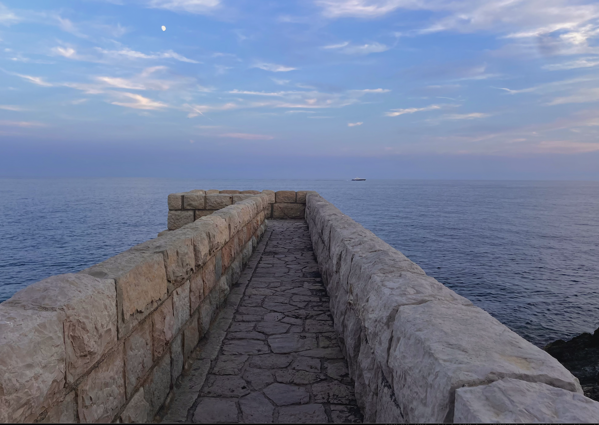

Nice Travel Guide
Nice is the French Riviera city you can actually afford. While Monaco flaunts wealth and Cannes courts celebrities, Nice is a real city—with markets, locals, and restaurants where you don't need reservations months in advance.
I love Nice for its livability. You can spend weeks here finding new neighborhoods, markets, and bistros. It's the perfect base for exploring the Côte d'Azur—easy train connections everywhere—but interesting enough you won't feel like you're just killing time between trips.
Where to Stay in Nice
Nice has distinct neighborhoods with different vibes. Choose based on what you want.
Vieux Nice (Old Town) is the heart of the city—narrow streets, colorful buildings, morning markets. It's charming but touristy. You're walking distance to everything, though street noise is guaranteed.
New Town is where Nice feels like a real French city. This is where I stay for longer visits—close to the beach but with genuine neighborhood character.
Port area is more relaxed than Old Town, with excellent restaurants along the harbor. It's a 20-minute walk to the Promenade but feels less touristy.
Near the Promenade gives you instant beach access, but you'll pay premium prices. Good for short stays.

Where to Eat
Nice has its own cuisine distinct from the rest of France—more Italian influence, more vegetables, more olive oil. The local specialties are worth seeking out.
Socca is the snack you'll eat most often—a chickpea flour pancake cooked in a wood oven, crispy edges, soft center, eaten standing up with black pepper. Chez Pipo does it best, though expect a line. Théresa near the port is the local alternative with no tourists.
Pan bagnat is Nice's answer to a sandwich—tuna, hard-boiled egg, anchovies, and vegetables on a roll soaked in olive oil. It shouldn't work but it does. Try it from a market stall rather than a sit-down restaurant.
Salade niçoise as served in Nice bears no resemblance to what you've had elsewhere. No green beans, no potatoes, no cooked vegetables at all. Just tomatoes, hard-boiled eggs, anchovies, olives, and tuna on lettuce. La Merenda serves it properly, but they don't take reservations or cards, so show up early with cash.
Cours Saleya market (mornings except Monday) is where you should be getting produce, cheese, and picnic supplies. The market restaurants are overpriced and mediocre—eat elsewhere.
For wine bars: The New Town has better options than Old Town. Cave de la Tour focuses on natural wines with small plates. L'Autre Part has excellent wine selection and knowledgeable staff who won't judge your budget.
What to Do
Walk the Promenade des Anglais. The 7km seafront path is Nice's defining feature. The beaches are pebbles, not sand, which takes adjustment—rent a cushioned lounger or accept that you'll be slightly uncomfortable. The water is incredibly clear and surprisingly warm in summer.
Climb Castle Hill (Colline du Château). The castle itself is long gone, but the hill offers the best views of the Baie des Anges and the red-tiled roofs of Old Town. Go for sunset, or early morning before the heat sets in. There's an elevator if stairs aren't appealing after a beach day.
Wander Vieux Nice. Get lost in the narrow streets, stumble upon tiny churches, find the best gelato (Fenocchio has 94 flavors—their lavender and fig varieties are unexpectedly good). Avoid restaurants with photos on the menu.
Visit the markets. Cours Saleya for produce and flowers (daily except Monday, when it becomes an antiques market). Marché de la Libération for a more local experience with fewer tourists and better prices.
Take the tram. Nice's modern tram system is efficient and connects all major areas. Line 1 runs from the port to the north, Line 2 goes to the airport. It's easier than driving, cheaper than taxis, and gives you a local perspective on the city.
Museums Worth Your Time
Musée Matisse sits in an olive grove overlooking Nice. The collection traces Matisse's evolution from dark realism to the colorful cut-outs of his later years. The building itself is a 17th-century Genoese villa. Take bus 15 or 22 to get there.
Musée Marc Chagall houses the world's largest collection of his work. The Biblical Message series is stunning, especially in the purpose-built rooms with natural light. Less crowded than Matisse, equally impressive.
MAMAC (Museum of Modern and Contemporary Art) focuses on French and American art from the 1960s onward. The rooftop terrace has panoramic views of the city. Free admission, which makes it an easy decision on a rainy day.
Russian Cathedral is architecturally striking—the most impressive Russian Orthodox cathedral outside Russia. Worthwhile for the exterior alone, but the interior's icons and frescoes are equally beautiful. Modest dress required.
Day Trips From Nice
Nice's location makes it the ideal base for exploring the Côte d'Azur. Train connections are frequent and affordable.
Monaco (20 minutes by train) is worth seeing once. The wealth is absurd, the casino is impressive, and the oceanographic museum is genuinely interesting. Eat before you go—everything costs triple what it should. Go mid-week to avoid the worst crowds.
Èze (20 minutes by bus 82 or 112) is a medieval hilltop village with spectacular views. It's small, touristy, and full of overpriced galleries, but the exotic garden at the top is worth the climb. Go early before tour buses arrive.
Antibes (25 minutes by train) feels more authentic than most Riviera towns. The Picasso Museum is excellent, the old town has character, and the morning market is one of the best on the coast. Cap d'Antibes coastal path offers stunning views away from the crowds.
Villefranche-sur-Mer (10 minutes by train) has a protected bay perfect for swimming and a charming old town without the tourist masses. The beach is actually sandy, unlike Nice's pebbles.
Cannes (30 minutes by train) is worth a day trip if you're curious, but honestly, it's just expensive shops and yacht-spotting. The film festival is in May, otherwise there's not much happening beyond conspicuous consumption. Nice is the better city.
A Few of My Favorite Spots
- Castle Hill at sunset for views of the bay
- Marché de la Libération for shopping like a local
- Chez Pipo for authentic socca
- Port Lympia for quieter waterfront dining
- Musée Matisse for art in olive groves
- Promenade walks early morning
- Train to Antibes for coastal day trips
- Cave de la Tour for natural wine
Practical Information
Getting there: Nice Côte d'Azur Airport is well-connected to European cities. Tram Line 2 reaches the airport in 30 minutes for €1.70—skip the expensive taxis unless you have lots of luggage. From Paris, the TGV takes 5.5 hours and is more pleasant than flying.
Getting around: Walking works for most of central Nice. The tram system is excellent for longer distances (€1.70 per ride, €5 day pass). Bikes are available but the hills make them impractical for casual riders. You don't need a car in Nice itself—only rent one for exploring inland Provence.
When to visit: May, June, and September offer the best balance of weather and manageable crowds. July and August are peak season—beaches are packed, prices increase, and locals leave town. April and October are lovely if you don't need beach weather. Winter is mild but many seasonal businesses close.
Language: Nice was Italian until 1860, and you'll still hear Niçard (the local dialect) among older residents. French is essential for anything beyond tourist areas. Even basic attempts at French are appreciated and will improve your experience significantly.
Money: Nice is more affordable than Monaco or Cannes, but still expensive by French standards. Budget €15-20 for casual meals, €30-50 for dinner with wine. Beach loungers cost €15-20 per day. Museums are mostly free or under €10. Cash is useful for markets and smaller restaurants.
Beach reality: The pebbles are beautiful but uncomfortable. Bring water shoes if you have sensitive feet. The free public beaches are fine—paying €20 for a lounger at a private beach gets you access to showers and changing rooms, which matters after a day in the sun.
Nice vs Cannes: Nice is a real city with substance. Cannes is a resort town that peaks during the film festival and coasts on reputation the rest of the year. Nice has better museums, better food, better value, and more interesting neighborhoods. Cannes has a sandier beach. Choose accordingly.